For all three merging techniques, I first put all images in the same
intensity domain by dividing each image by the exposure time. To show the
results in a displayable format, I rescaled each output image to [0, 1]. For
each log irradiance image, I calculated the pixel values from the resulting
HDR image and the corresponding exposure time using the function
g(Z) = ln(t) + ln(E).
Naive LDR merging
For naive LDR merging, I summed the intensities at each pixel location and
divided the result by 3 to calculate the average.
Low exposure (t=1/160s)
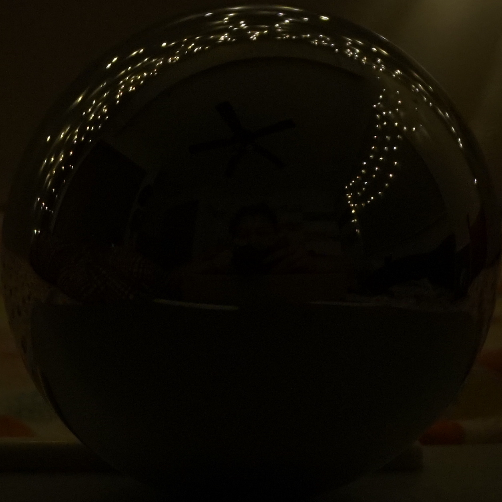
Medium exposure (t=1/40s)
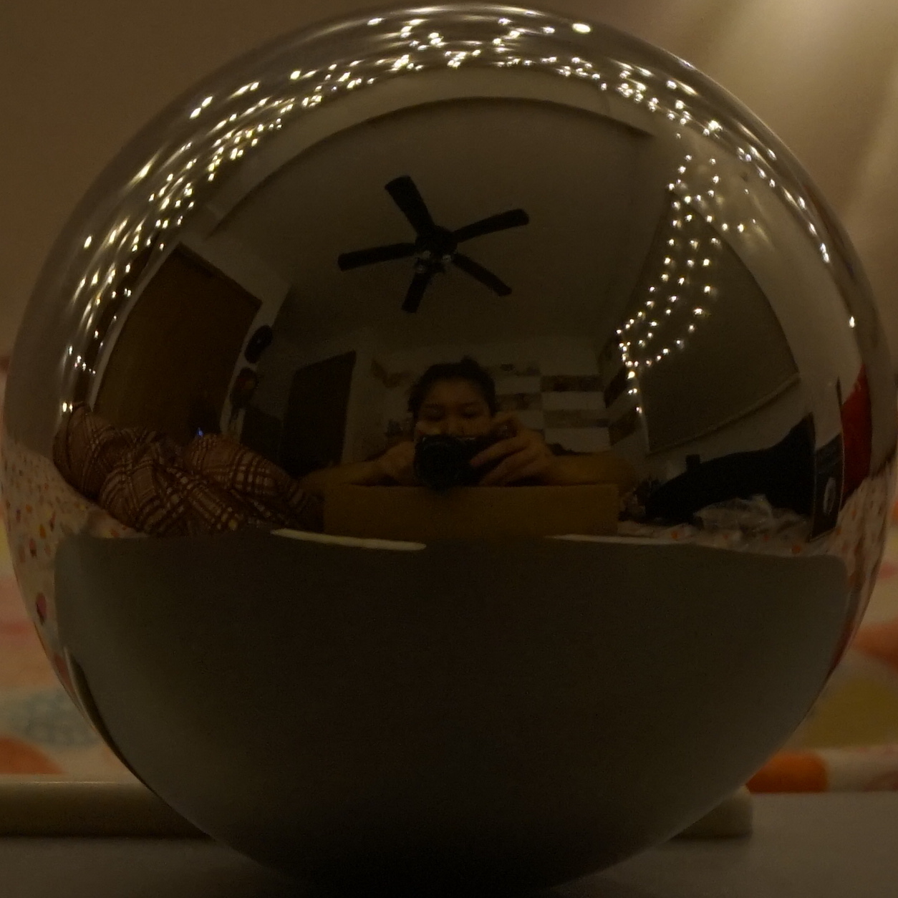
High exposure (t=1/10s)
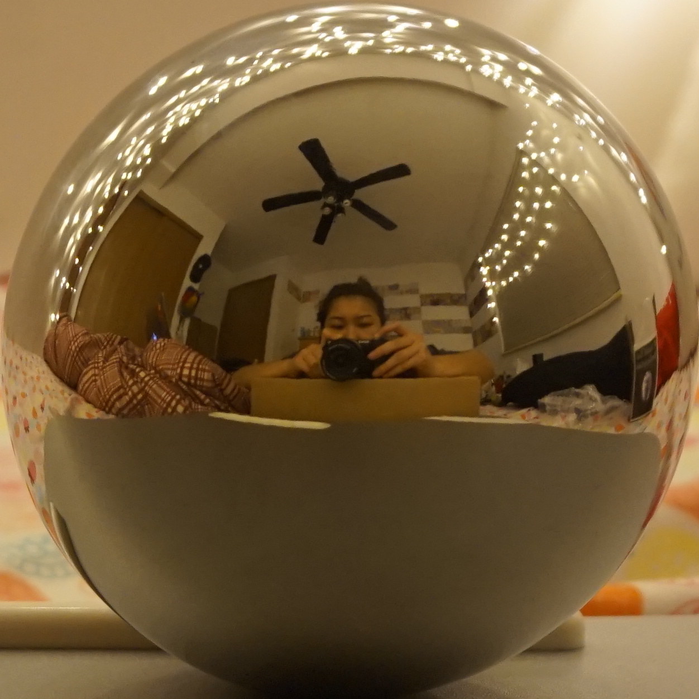
Naive merge
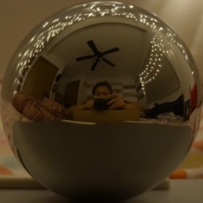
Estimated log irradiances
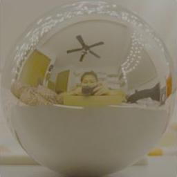
LDR merging without under- and over-exposed regions
For simple LDR merging, I used a weighing function that maps pixel intensity
to the range [0, 1] when calculating the average intensity. The weighting
function gives a larger weight to pixels in the mid-range intensities and
smaller weight to pixels in the low and high intensity ranges. This time,
instead of dividing by 3, I divided by the sum of all the weights for a
pixel location. For both naive merging and merging without under- and over-
exposed regions, the log irradiances look different for each exposure
because the log irradiance calculation is determined by exposure time. As
the exposure time increases, the log irradiance should decrease.
For LDR merging with response function estimation, I used the same weighting
function as before. I randomly sample 100 pixels to plug into the gsolve
function. I use lambda = 20. For each color channel, I estimate a separate
response function.
Here, I plot the estimated response functions returned by the gsolve
function. As you increase in pixel value (around 255), the curve becomes
less monotonic.
Red channel
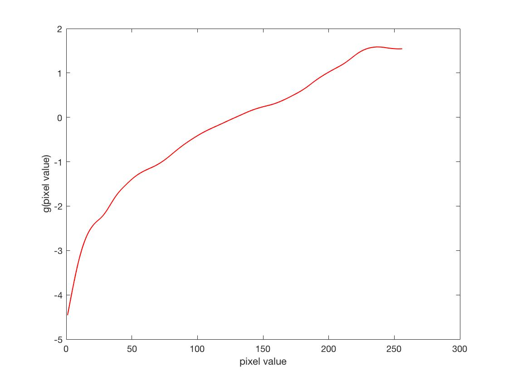
Green channel
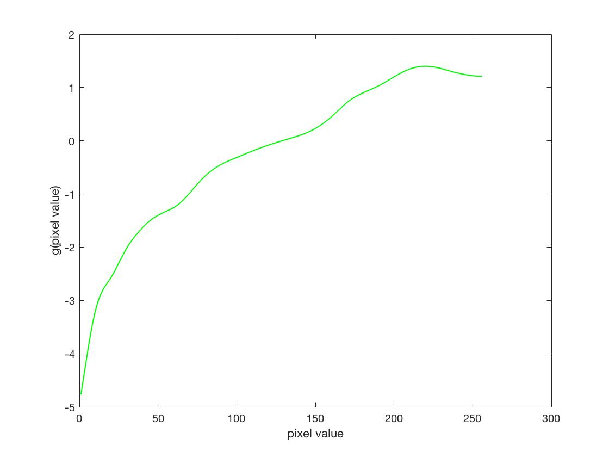
Blue channel
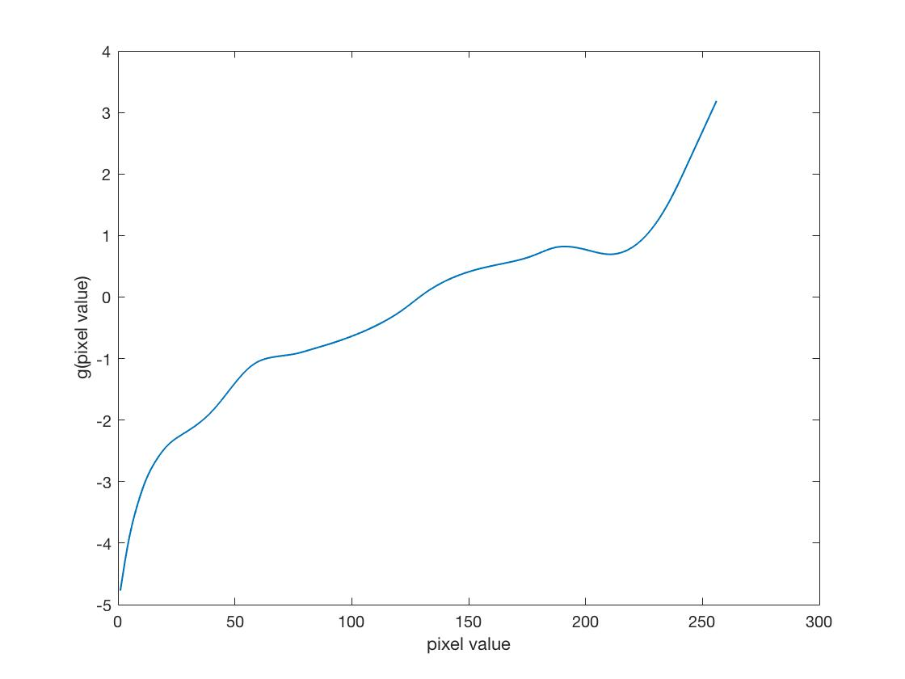
Panoramic transformation
In order to do image-based lighting, we need to convert them mirror ball
into a panoramic format. To do this, we have to find a mapping from the
spherical domain to the equirectangular domain. Using the assumption that
the sphere has unit radius, for each pixel inside the sphere, I calculate
its unit vector, normal vector, and reflection vector. Once we calculate
the reflection vector, we can convert the vector into spherical coordinates
(phi, theta). The next step is to use scatteredInterpolant to transform
the spherical coordinates into equirectangular coordinates. The result can
be found below.
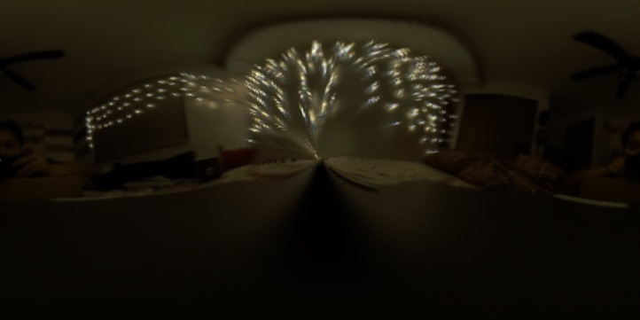
Rendering synthetic objects into photographs
For rendering synthetic objects into the scene, I create a local scene to
capture all the shadows of the objects and the reflections of the object
onto the plane that they are sitting on. We need an image of just the local
scene without the objects so that we can calculate the difference, which
gives us the shadows and reflections. In my composite helper function, I use
the object mask to get the objects' pixels and combine that with the shadows
and reflections from the previous step and the background image. My two
results are below.
Background image
Rendering with objects
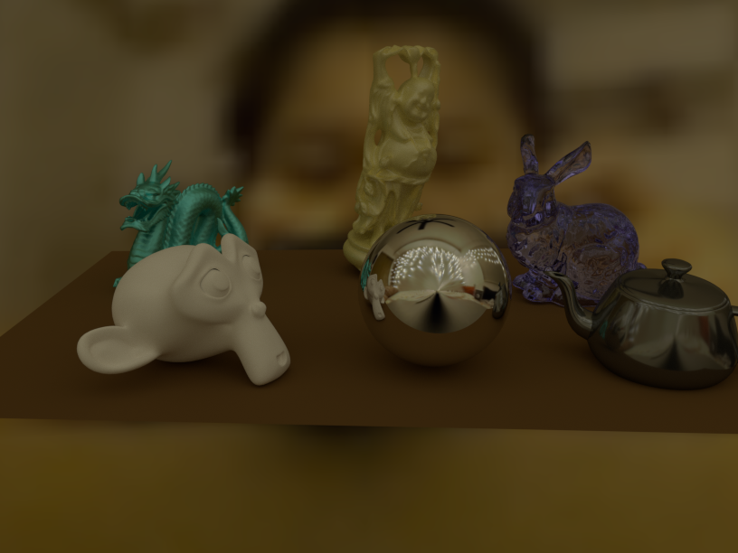
Rendering without objects
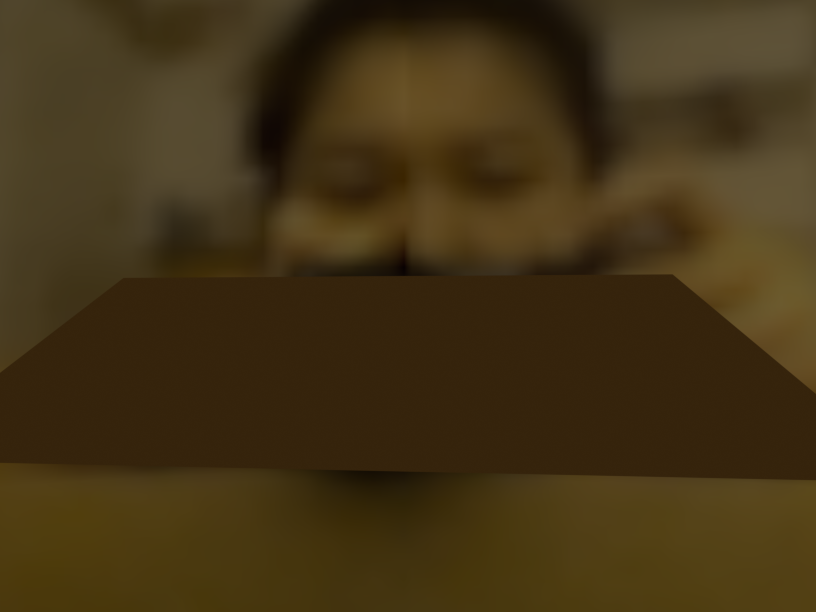
Object mask
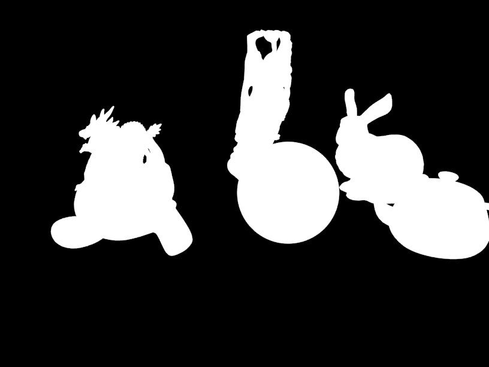
Result
Rendering with objects
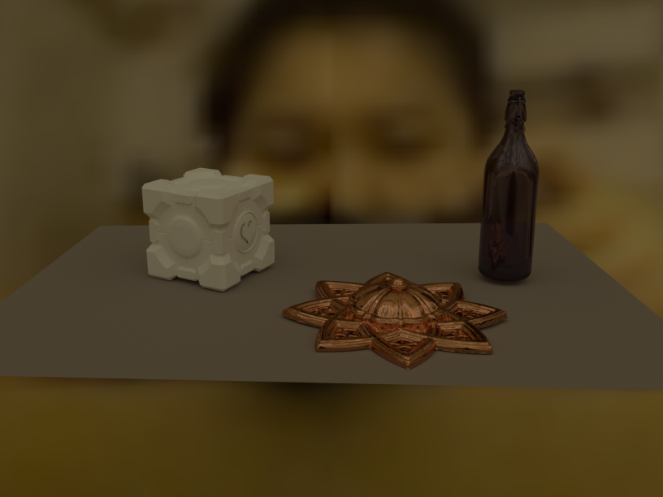
Rendering without objects
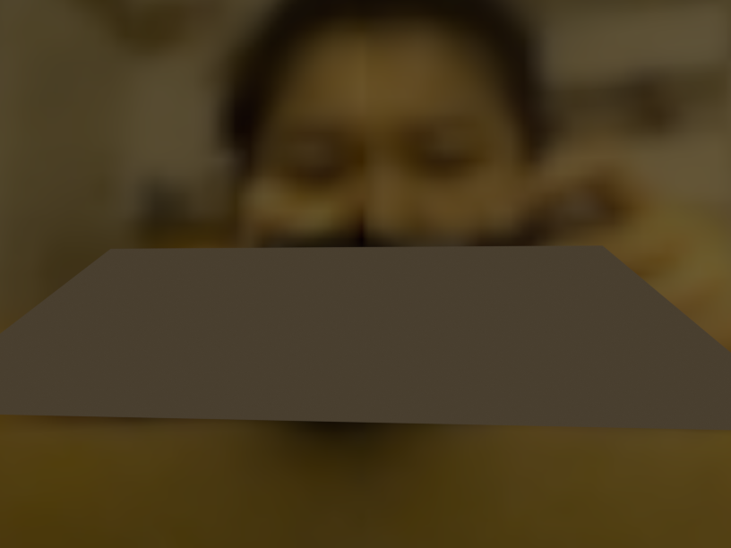